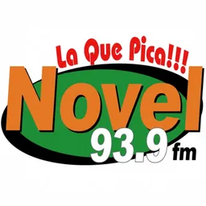

Hub · Género
Radios de baladas y romántica
65 emisoras en vivo en VivoRD
Las emisoras románticas y de balada dominicanas acompañan tardes, oficinas y tránsito con repertorio sentimental en español. Detectamos este grupo cuando el catálogo menciona balada, romántica, canciones de amor o términos afines en nombre o descripción.
El formato suele mezclar balada latina, pop suave y clásicos internacionales. Algunas señales nocturnas amplían espacios de dedicatorias y llamadas de oyentes. Clasificamos solo con evidencia textual para no inventar formatos.
Listamos emisoras saludables con enlace a ficha completa y reproductor. Ciudad y frecuencia aparecen cuando constan en datos.
Si buscas bachata romántica específicamente, revisa también el hub de bachata. Las guías enlazadas explican cómo escuchar desde el extranjero sin apps adicionales.
Muchas emisoras de este grupo mantienen espacios de dedicatorias y peticiones en vivo; la ficha individual resume la programación cuando el titular la publica en su web o en nuestros metadatos.
Las tardes dominicanas siguen siendo horario fuerte para este formato: luz tenue, tránsito lento y canciones sentimentales que estas emisoras programan de forma explícita.
Muchas parejas y taxistas de provincia dejan estas frecuencias fijas en bajo volumen durante horas; el hub facilita retomar esa costumbre desde el navegador.
Emisoras


